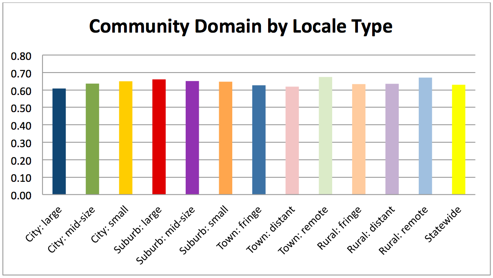
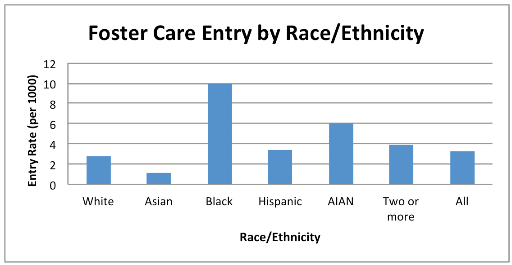

Equity Analyses
Equity Analyses
The Youth Well-Being Index (YWI) and Youth Vulnerability Index (YVI) maps show index scores and indicator rates by sex and race/ethnicity for specific places. This page provides statewide analyses of the YWI and YVI and their related indicators. For the YWI we provide analyses by sex, race/ethnicity and community type (e.g. rural, suburban, urban). For the YVI we provide analyses by sex and race/ethnicity. These analyses use the same data and calculations as the maps; for more information about them please see the “Data” page.
Youth Well-Being Index (YWI) Statewide Sub-Group Analyses
The YWI maps show YWI scores and related data for school districts by sex and race/ethnicity. But what do YWI scores look like by sub-group for the state as a whole? Here we share some analyses in chart form.
YWI By SexAvailable data allow us to calculate the YWI using the categories “male” and “female.” The chart below shows that females score slightly higher than males on the YWI overall. While females and males have the same score for the “Community Context” dimension, which looks at local household incomes and civic participation, females have higher scores in Health, Social Relationships, and especially Education. Males and females both have the highest scores in Social Relationships and the lowest in Education.

Calculating the YWI by race/ethnicity is challenging because different data sources that make up the index use varying racial/ethnic categories. We did the best we could to specify groups, although are still unable to differentiate between many meaningful racial/ethnic categories (for example, breaking out all national/ethnic groups within the “Asian” and “Black” categories, breaking out racial and ethnic groups in the “Hispanic” category, knowing who makes up the group that identified with “two or more” racial/ethnic groups).
The chart below shows statewide YWI scores for each racial/ethnic category. The YWI score for all of California is shown at the far right.
YWI “Domains” By Race/Ethnicity
The Youth Well-Being Index includes 4 elements or “domains” of well-being: health, education, social relationships, and community contexts (see more on this on the “About Data” page). The charts below show the scores in each of these areas by race/ethnicity.
Health (including measures of physical fitness, substance use avoidance and feeling safe)
Education (including measures of high school completion and college readiness)

Social Relationships (including measures of having positive relationships with school peers and adults in and out of school)
Community Contexts (including measures of adequate household income and youth civic and activity participation)

Youth Well-Being Index (YWI) Statewide Community-Type Analyses
The YWI maps show YWI scores and related data by school district. But what do YWI scores look like for different district/community types? Here we share some analyses in chart form.
For this analysis we use district/community-type categories that are based on U.S. Census data and are assigned to districts by the National Center for Education Statistics (NCES).
All YWI scores are based on a potential top score of 100%. It is important to keep in mind that some data sources and datasets we use for the YWI do not provide information for every young Californian; we know that some sources tend to under- or not represent certain populations. For example, U.S. Census data tend to undercount youth with unauthorized immigration status. The YWI education data do not reflect the experiences of county-run alternative school and home-school students, or youth who are no longer attending school. For more information on the data sources please see the “Data” section of this website. Consider doing your own research and/or using other research to add to analyses we offer here.
YWI By Community/District TypeThis chart shows the mean YWI scores for each community/district type. The mean score for all districts, 63% out of a potential 100%, is on the right. This comparison shows that youth well-being scores are somewhat higher than the state mean in small cities and large suburbs, while they are somewhat lower in distant towns.
YWI “Domains” By Community/District Type
The Youth Well-Being Index includes 4 elements or “domains” of well-being: health, education, social relationships, and community involvement (see more on this on the “Data” page). The charts below show the mean scores in each of these domains by community/district type.
Health (including measures of physical fitness, substance use avoidance and feeling safe)
Statewide the mean Health score is 64% out of a possible 100%. Remote rural localities (58%), distant rural areas (61%), and remote towns (61%) stand out as having somewhat lower scores. In contrast, small cities (66%), large suburbs (66%), mid-size cities (65%) and mid-size suburbs (65%) have higher scores.
Education (including measures of high school completion and college readiness)
Statewide the mean Education score is 58% out of a possible 100%. Distant towns (55%) and remote rural areas (56%) have somewhat lower mean scores, while small cities (64%) and large suburbs (63%) have higher mean scores.

Social Relationships (including measures of having positive relationships with school peers and adults in and out of school)
Statewide the mean Social Relationships score is 68% out of a possible 100%. Large cities (66%) and mid-size cities (67%) and distant towns (67%) have somewhat lower scores, while remote towns (70%), and distant (69%) and remote rural (69%) communities have the highest scores.
Community Involvement (including measures of youth civic and activity participation)
Statewide the mean Community Involvement score is 63% out of a possible 100%. Populations in remote rural areas (67%), remote towns (67%) and large suburbs (66%) have the highest mean scores, while large cities (61%) and distant towns (62%) have the lowest.

Youth Vulnerability Index (YVI) Statewide Sub-Group Analyses (2009-2011)
The YVI assesses potential for isolation from adequate support for well-being, combining four indicators: the rates at which youth became teen mothers, did not complete high school, were placed in foster care, and lived in households with very low incomes. In each place indicators are ranked on a scale of 1-4:
- met benchmark (lowest average county rate experienced by 10% of the target CA youth population in 2010)
- nearing the benchmark (within 90%)
- below the benchmark (within 50%-90%)
- far below the benchmark (below 50% on benchmark).
The YVI maps show YVI scores and related indicator data by county for all youth and for specific sub-groups. But what do YVI scores and indicator data look like by sub-group in the state as a whole? Here we share some analyses in chart form for females, males, and six racial/ethnic categories: White, Asian, Black, Hispanic/Latino, American Indian/Native Alaskan, and Two or More(*1).
For more information on the data sources please see the “Data” section of this website. Consider doing your own research and/or using other research to add to analyses we offer here.
(*1) These analyses employ statewide datasets for each population. They do not reflect averages across counties.
YVI By Male/Female Sub-Groups
Available data allow us to calculate the YVI using the categories “male” and “female.” The chart below shows that statewide females scored slightly higher than males on the YVI overall. However, there were some differences across individual indicators.
Foster Care Entry (number of children and youth ages 0-17 per 1000, 2009-2011)
Females entered foster care at slightly higher rates than males (3.46 females per 1000 versus 3.19 males per 1000).
High School Non-Completion (number of youth ages 20-24 per 100)
Among young males ages 20 to 24, 21.06 per 100 did not complete high school, in comparison with 14.66 per 100 young women.

Very Low Family Income (number of youth ages 12 to 17 per 100)
Females lived in families with incomes below the federal poverty line at almost the same rates than males (19.19 females ages 0-17 per 1000 versus 18.93 males ages 0-17 per 1000).

Teen Birth Rates (number of births to females ages 15-19 per 1000)
Unfortunately there are no data available on births to teen fathers, so we report here only on births to teen mothers. Statewide from 2009-2011, 30.22 females ages 15-19 per 1000 gave birth.
YVI By Race/Ethnicity
Calculating the YVI by race/ethnicity is challenging because different data sources that make up the index use varying racial/ethnic categories. We used categories that could be applied across all data sets. Unfortunately these categories do not differentiate between many meaningful racial/ethnic categories (for example, breaking out all national/ethnic groups within the “Asian” and “Black” categories, breaking out racial and ethnic groups in the “Hispanic” category, knowing who makes up the group that identified with “two or more” racial/ethnic groups).
The chart below shows statewide YVI scores for each racial/ethnic category (AIAN stands for “American Indian/Alaskan Native). The YVI score for all of California is shown at the far right.

This chart shows that statewide young people identified as Black and young people identified as American Indian/Alaskan Native are experiencing at high rates all four conditions associated with isolation from support for well-being. Young people identified as Hispanic/Latino or identified with two or more racial/ethnic categories are also experiencing most of these conditions at high rates. White youth experience these conditions at the lowest rates in the state.
YVI Indicators By Race/Ethnicity
The Youth Vulnerability Index includes 4 indicators of isolation from adequate support for well-being: the rates at which young people were placed in foster care, did not complete high school, lived in households with very low incomes, and became teen mothers. (see more on this on the “About Data” page). The charts below show the actual statewide rates by race/ethnicity.
Foster Care Entry (number of children and youth ages 0-17 per 1000)
Statewide children and youth identified as Black and children and youth identified as Native American/Alaskan Native entered foster care at the highest rates from 2009-2011. Children identified as Asian entered foster care at the lowest rates.

High School Non-Completion (number of youth ages 20-24 per 100)
Statewide just over 28 of every 100 young people identified as Hispanic had not completed high school at the highest rates. American Indian/Alaskan Native and Black youth had also not completed high school at high rates. Asian and White youth were least likely to have not completed high school.
Very Low Family Income (number of youth ages 12 to 17 per 100)
Statewide the families of more than 25 of every 100 young people identified as Black, Hispanic or American Indian/Alaskan Native earned less than the federal poverty line. The families of approximately 8 of every 100 young people identified as White experienced these economic circumstances.
Teen Birth Rates (number of births to females ages 15-19 per 1000)
Statewide female teens identified as Hispanic had the highest birth rates from 2009-2011, followed by Black and American Indian/Alaskan Native female teens. Young women identified as Asian had the lowest birth rates.